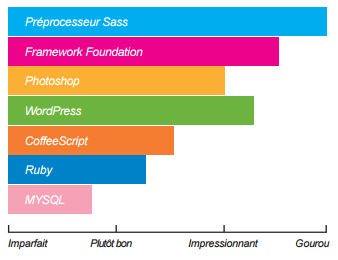

Bonjour à tous, voici mon premier article, qui parlera d’une personne qui m’a beaucoup influencé et aidé à progresser.
David Leuliette est un Designer & développeur front-end Lillois d’une trentaine d’années.
Spécialisé dans le responsive webdesign, il dessine et développe des interfaces qui s’adaptent au différents terminaux : smartphones, tablettes et ordinateurs de bureau.
Vous pouvez découvrir son activité de freelance consultant et formateur front-end
Ses années de veille technologique, ainsi que ses études d’informatique et de design, lui ont permis d’acquérir de solides compétences dans le domaine du web.
Passionné par internet, les nouvelles technologies, militant OpenSource, il écrit des articles sur la vie d’un travailleur du Web
→ Blog de David Leuliette
Une personne atypique
David est une personne pleine de vie, ne se prenant pas la tête !
Il aime beaucoup tout automatiser pour se simplifier la vie, il appelle ça “Être dans le turfu !”.
Il exprime une réelle passion pour son métier, possède un sens du partage, il n’hésitera pas à se caler une heure avec vous pour vous expliquer ce que vous n’avait pas compris.
Une de ces priorité : produire un travail de qualité !
Quand il est en mission, il n’hésite pas à dire ce qu’il pense aux clients “Non mais vous avez craqué, c’est pourris ça !”,
mais uniquement dans le but d’améliorer le produit du client “Moi je vous propose d’utiliser ça, ce qui améliora les performance, et l’expérience utilisateur”.
Il a changé ma vision du monde !
David est fan de tous ce qui touche au collaboratif et au partage !
BlaBlaCar, Twitter, Facebook, Bloging, Conférence, NewsLetter et j’en passe.
Il m’as fait découvrir des choses que je pensais appartenir au domaine de la fiction !
David aime beaucoup partir à l’aventure en voyage — En mode Yolo — avec peu de préparation.
Je pourrais le comparer à Bear Grylls mais version 21ème siecle, il est parti récemment pendant 100 jours en Amérique du sud, uniquement avec quelques affaires, iPhone 6 pour de jolies photos, et quelque dollards par jour ! Cela lui à permi de ce couper du monde, de souffler et se ressourcer.
Retrouvez son article : Déconnexion de David — 100 jours de voyage
Il m’a transmis le fait d’apprécier les choses simple de la vie, de ne pas ce mettre de pression, et de profiter à fond !
Son parcours
David à obtenu son DUT Informatique - Imagenie Numérique en septembre 2006 à l’IUT de Calais, ensuite sa Licence Pro - Concepteur Intégrateur WEB en février 2008 à Efficom à Lille. La majeure partie de ses connaissances ? Il l’as acquis en autodidacte. Savoir se tenir à jour est indispensable pour suivre les technologies du web, participer à des conférences, suivre différentes formations…
Il a commencé sa vie de développeur au Fresnoy Studio d’art contemporain - Tourcoing en 2007. Il a ensuite travaillé dans diverses sociétés qui lui on permis d’acquérir de plus en plus de compétences. À l’heure ou je vous parle, il est embauché chez Ineat Conseil tout comme moi et nous sommes sur une mission d’application mobile chez le même client.
Ses compétences :

Que m’as t-il apporté en terme de développement ?
Il m’a initié à Sublime text, ce qui à quadruplé mon efficacité en codage !
Des plugins pour tout, des raccourcis qui vous simplifient la vie, des linter qui vous forcent à avoir une rigeur de code !
Retrouvez son article maitriser Sublime Text comme un pro.Il m’as ensuite partagé son expertise sur Git & GitHub, 2 outils indispensable pour travailler en équipe.
Retrouvez son article installation de git sur MacOS, Linux & Windows.Il m’as appris à savoir gérer une équipe sans jouer au “Petit chef”, notamment avec la méthode agile scrum et gérer son backlog avec Trello.
Il m’a sensibilisé au “responsive design”, comment mettre en place et utiliser une grid simplement, ce qui permet de créer des interfaces utilisateurs de qualité, intuitives, et multi-plateforme, grâce à des frameworks comme Foundation 6 et Ionic.
Il m’as démontré la puissance des “tasks runner” comme Gulp, des générateur comme Yeoman.
La liste est longue… David est une des meilleurs personne que j’ai rencontré dans ma jeune carrière ! Il ne se qualifie pas d’expert mais je le trouve modeste ! Il est vraiment pédagogue et ne vous lâchera pas la grappe le temps que vous n’aurez pas compris clairement les choses, en même temps il est professeur à l’IUT de calais, et donne des cours au Wagon de Brussel.
Faites lui confiance, ne vous le regretez pas !
David travaille chez Ineat Conseil, mais en parallèle il mène une activité de Freelance et également de professeur à l’IUT de calais et au Wagon.
Vous pouvez télécharger son cv d’expert développeur front-end ou l’ajouter sur linkedin.
Je vous le recommande vivement et tout son entourage fera de même.